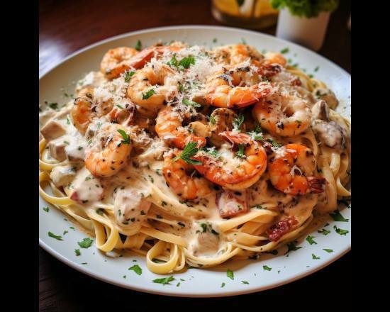
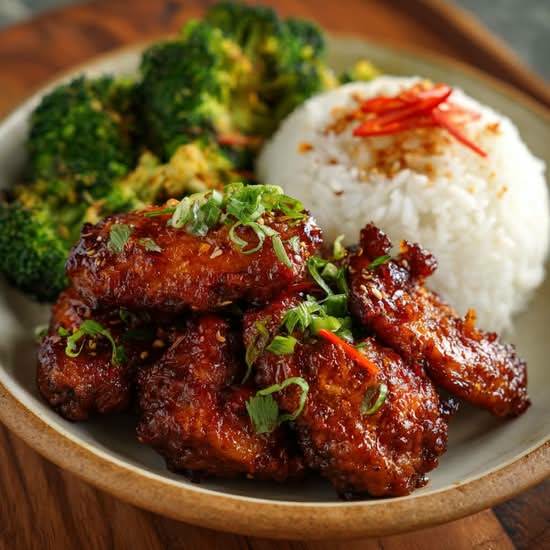

Atlanta, GA · Open 24 hours · 7 days a week
Pasta Alfredo, Lobster and Crab, Cooked 24/7 in Atlanta
Order now on Uber Eats as Relentless Eats, or on DoorDash as Gourmet Grub or Shrimp & Lobster Unlimited. One kitchen, one award-winning chef, and food made with love at every hour of the day and night.
The dishes Atlanta orders most
Our shrimp pasta Alfredo, chicken pasta Alfredo, chicken and shrimp pasta Alfredo and salmon Alfredo lead the menu, and the favorites come in an XX size: double everything, built for two. We also cook wings, salmon with rice and broccoli, and we always have lobster and crab.
Pasta Alfredo, the house favorites




Lobster and crab, always available


Wings, salmon, rice and broccoli plates




More chef favorites

Why Atlanta orders from us at 3 a.m.
Open 24/7. We never close, so late shifts, early flights and midnight cravings are covered.
Made to order. Sauces stirred fresh, shrimp seared hot, pasta cooked al dente, packed to travel.
Award-winning chef. Every recipe comes from Chef Relentless Aaron, First Place winner at The Great Rockdale County Cook-off, April 9, 2016.
Popular Atlanta searches
Late-night food delivery in Atlanta · 24-hour seafood delivery · Shrimp Alfredo delivery · Lobster and crab delivery
On Uber Eats the storefront is Relentless Eats. On DoorDash, look for Gourmet Grub or Shrimp & Lobster Unlimited — same kitchen, same chef. Menus can differ slightly between the two apps.